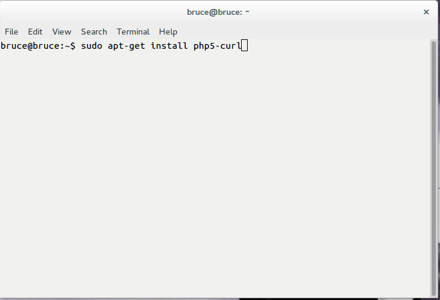
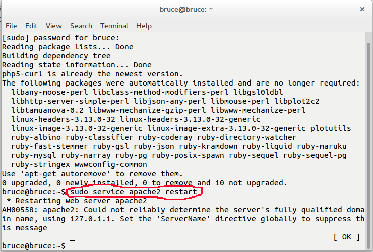

Procedures
In starting off with using Harvest API, there are some procedures that need to be followed. As a Ubuntu user, you can do the following:
- Go to the terminal and enter the command below.

When you enter your password, the terminal will show you a list of packages to install. Type 'y' for yes
-
After doing the first procedure, you can restart your apache server by simply entering the command that is colored in red:

If you have NOT installed apache2 before you can go to this website here by clicking this link:
Apache Installation
-
After restarting apache2, there are some possibilities of curl that you may need to install as shown below:
After entering your password, the packages will appear and will ask you if you want to install them. Type 'y' for yes.